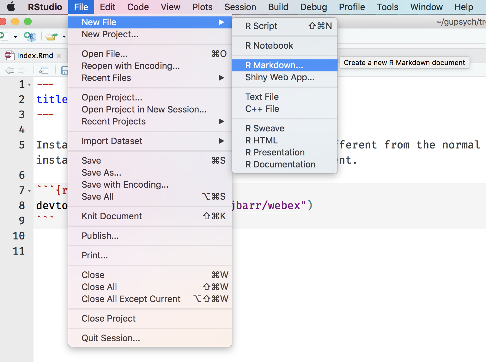

Web exercises with webex
Dale and Lisa are developing an R package called webex to make it easier to make web-based exercises. It provides an RMarkdown template and a few function to make questions that automatically give feedback and hint or solution buttons.
Create fill-in-the-blank questions using fitb("4"), providing the answer as the first argument.
- 2 + 2 is
You can also create these questions dynamically, using variables from your R session.
x <- sample(2:8, 1)- The square root of 4 is:
The blanks are case-sensitive; if you don’t care about case, use the argument ignore_case = TRUE.
fitb("E", ignore_case = TRUE)
- What is the letter after D?
If you want to ignore differences in whitespace use, use the argument ignore_ws = TRUE and include spaces in your answer anywhere they could be acceptable.
fitb("library( tidyverse )", ignore_case = TRUE, width = "20")
- How do you load the tidyverse package?
You can set more than one possible correct answer by setting the answers as a vector.
fitb(c("A", "E", "I", "O" , "U"), ignore_case = TRUE)
- Type a vowel:
Create multiple choice questions using mcq(c(answer = "correct answer", "incorrect 1", "incorrect 2")).
- “Never gonna give you up, never gonna: ”
- “I down in Africa” -Toto
If your options are just true or false, you can make a quick MCQ with torf(TRUE) or torf(FALSE)
- You can permute values in a vector using
sample().
Webex also lets you make hidden solutions and hints by surrounding the hint or answer with hide("Button Text") and unhide().
- Recreate the scatterplot below, using the built-in
carsdataset.

?geom_smooth
ggplot(cars, aes(speed, dist)) +
geom_point() +
geom_smooth(method = "lm", color = "red") +
ylab("distance")Getting Started
- Install webex from github. This is a little different from typical installation, since the package is in development. Just use the code below.
devtools::install_github("dalejbarr/webex")- Create a new RMarkdown file

- Select the “Web Exercises” template.

Edit the template with your content. Leave the
setupchunk of code at the top.Knit to HTML

- Open the new .html file in your web browser.